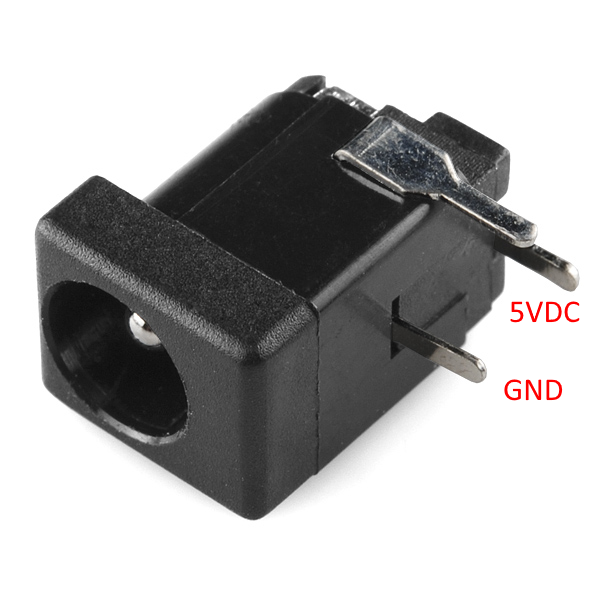
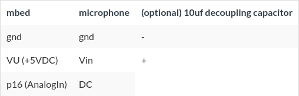
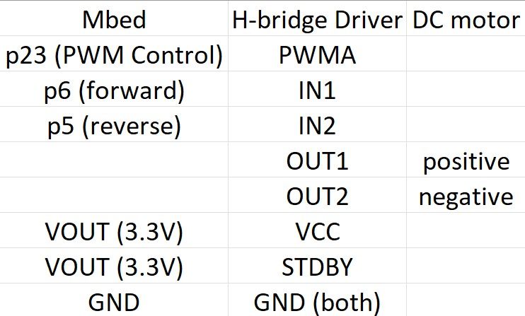

The Mbed-Pi security system (MPSS) is an embedded security system that uses the mbed LPC1768 microcontroller and a Raspberry Pi. The MPSS is designed with a camera that broadcasts its feed on the local network. It uses an array of microphones to detect abnormal sound levels, and swivel the camera in the direction of the sound. The system is designed to be inexpensive and easy to setup. The following site documents the required components, their physical setup, and the code required to run the MPSS.
The Mbed first needs to be connected to the four SPW2340 microphones to read their inputs.
Plug in the barrel jack breadboard adapter into the breadboard, and connect the external supply to it. Connect the ground of the power supply to the ground of the mbed. The SPW2340 microphones require 5V inputs, and since there are four microphones, it is safer to connect them to an external supply than to 'VU' on the mbed.

Plug in each microphone into an individual breadboard, and connect each microphone up to the mbed with the given wiring configuration. Use the Analog In ports 15, 16, 17, and 19. The reason for this will explained later. Point each of the four breadboards in four different directions facing opposite to each other.

SPW2340 Microphone-Mbed Wiring
Code Example - Microphone Input
#include "mbed.h"
//Adafruit MEMs SPW2430 microphone demo
//LEDs display audio level
BusOut myleds(LED1,LED2,LED3,LED4);
class microphone
{
public :
microphone(PinName pin);
float read();
operator float ();
private :
AnalogIn _pin;
};
microphone::microphone (PinName pin):
_pin(pin)
{
}
float microphone::read()
{
return _pin.read();
}
inline microphone::operator float ()
{
return _pin.read();
}
microphone mymicrophone(p16);
int main()
{
while(1) {
//read in, subtract 0.67 DC bias, take
// absolute value, and scale up .1Vpp
//to 15 for builtin LED display
myleds = int(abs((mymicrophone - (0.67/3.3)))*500.0);
//Use an 8kHz audio sample rate (phone quality audio);
wait(1.0/8000.0);
}
}
Mbed Motor Control
The Mbed needs to be connected to the motor to control the direction of the Pi camera. This is done using a H-Bridge motor driver since this allows for speed and direction modulation.
Connect the mbed and the DC motor to the driver using the wiring steps below:

DC Motor-Driver Wiring
The Control signal from the Motor Driver is connected to a DigitalOut signal from the mbed. In the code example below, Pin 8 is used. The positive and negative lines from the driver are connected to the positive and ground from the external power supply.
Code Example - Motor Driver
// Sweep the motor speed from
// full-speed reverse (-1.0) to full speed forwards (1.0)
#include "mbed.h"
#include "Motor.h"
Motor m(p23, p6, p5); // pwm, fwd, rev
int main() {
for (float s= -1.0; s < 1.0 ; s += 0.01) {
m.speed(s);
wait(0.02);
}
}
Controlling the motor with microphone input
The Mbed needs to pivot the motor to the direction from which the most sound is coming if the sound exceeds a certain threshold. For this, the current state of the motor needs to be tracked. A state machine is maintained, and the microphones are used as input for the system. The motor controls and microphone inputs are run on separate threads to ensure that controlling the motor does not affect the sample rate of fthe microphone. To use threads, the Mbed RTOS (Real Time Operating System) is used. The RTOS must be imported from the RTOS library. The code is given below.
Code Example - Complete Mbed system code
#include "mbed.h"
#include "rtos.h"
#include "Motor.h"
BusOut myleds(LED1,LED2,LED3,LED4);
Serial pc(USBTX, USBRX);
class microphone
{
public :
microphone(PinName pin);
float read();
operator float ();
private :
AnalogIn _pin;
};
microphone::microphone (PinName pin):
_pin(pin)
{
}
float microphone::read()
{
return _pin.read();
}
inline microphone::operator float ()
{
return _pin.read();
}
// DigitalOut email(p9);
DigitalIn emailIn(p10);
microphone micA(p15);
microphone micB(p16);
microphone micC(p19);
microphone micD(p17);
AnalogOut email(p18);
// PwmOut motor(p21);
Motor m(p23, p6, p5); // pwm, fwd, rev
int motorVal = 0;
double motorTimePeriod = (1.0 / 8000.0);
double audioSampleRate = 1.0 / 8000.0;
double motorWaitPeriodInit = int(0.5 / audioSampleRate);
double motorWaitPeriod = motorWaitPeriodInit;
bool motorWaiting = false;
int micThreshold = 25;
int micMaxThreshold = 70;
double motorSpeed = 0.2;
int currPos = 0; // Assume the default position is 0.
int nextPos = 0;
Mutex nextPosMutex;
// 0 - A
// 1 - B
// 2 - C
// 3 - D
int offsetCycles = 0;
// Try using a different thread for the motor controls.
void motorPosition(void const * argument) {
while(1) {
// while(nextPosMutex.trylock()) {
// Thread::yield();
// }
nextPosMutex.lock();
if (currPos != nextPos) {
int numRotations;
double movementTimePeriod;
numRotations = abs(nextPos - currPos);
int signFactor = - (nextPos - currPos) / abs(nextPos - currPos);
double factor;
// numRotations = 3;
if (numRotations == 1) {
factor = 690.0;
} else if (numRotations) {
factor = 660.0;
} else {
factor = 660.0;
}
if (offsetCycles == 2) {
offsetCycles = 0;
factor += 10;
} else {
offsetCycles += 1;
}
movementTimePeriod = 1000.0 * double(numRotations) * double(motorTimePeriod) * factor * (1.0 / motorSpeed);
m.speed(motorSpeed * signFactor);
Thread::wait(movementTimePeriod);
m.speed(0);
if (currPos == nextPos) {
pc.printf("ERROR HERE\n");
}
pc.printf("Moving from %d to %d and %d\n", currPos, nextPos, numRotations);
currPos = nextPos;
}
nextPosMutex.unlock();
}
}
int main()
{
email = 0.0;
pc.printf("Beggining current position: %d and next position: %d\n", currPos, nextPos);
Thread motorThread(motorPosition);
while(1) {
email = 0.0;
//read in, subtract 0.67 DC bias, take absolute value, and scale up .1Vpp to 15 for builtin LED display
int valueA = int(abs((micA - (0.67/3.3)))*500.0);
int valueB = int(abs((micB - (0.67/3.3)))*500.0);
int valueC = int(abs((micC - (0.67/3.3)))*500.0);
int valueD = int(abs((micD - (0.67/3.3)))*500.0);
myleds = (valueA + valueB + valueC + valueD) / 4; // Just used as an indicator.
int maxValueA = 0;
int maxValueB = 0;
int maxValueC = 0;
int maxValueD = 0;
int highestVal = 0;
if (motorWaiting) {
motorWaitPeriod -= 1;
if (motorWaitPeriod == 0) {
motorWaiting = false;
motorWaitPeriod = motorWaitPeriodInit;
}
}
if (valueA >= micThreshold && valueA < micMaxThreshold) {
// pc.printf("MIC-A: %d\n", int(valueA));
// if (!motorWaiting) {
// nextPos = 0;
// motorWaiting = true;
// }
maxValueA = valueA;
if (maxValueA > highestVal) {
highestVal = maxValueA;
}
}
if (valueB >= micThreshold && valueB < micMaxThreshold) {
// pc.printf("MIC-B: %d\n", int(valueB));
// if (!motorWaiting) {
// nextPos = 1;
// motorWaiting = true;
// }
maxValueB = valueB;
// pc.printf("HERE MATE %d\n", maxValueB);
if (maxValueB > highestVal) {
highestVal = maxValueB;
}
}
if (valueC >= micThreshold && valueC < micMaxThreshold) {
// pc.printf("MIC-C: %d\n", int(valueC));
// if (!motorWaiting) {
// nextPos = 2;
// motorWaiting = true;
// }
maxValueC = valueC;
if (maxValueC > highestVal) {
highestVal = maxValueC;
}
}
if (valueD >= micThreshold && valueD < micMaxThreshold) {
// pc.printf("MIC-D: %d\n", int(valueD));
// if (!motorWaiting) {
// nextPos = 3;
// motorWaiting = true;
// }
maxValueD = valueD;
if (maxValueD > highestVal) {
highestVal = maxValueD;
}
}
// Ensures that the mic with the highest output is pivoted to
// not the one that breaks the barrier and comes first in the list above.
// while (nextPosMutex.trylock()) {
// Thread::yield();
// }
nextPosMutex.lock();
// if (!motorWaiting) {
// email = 0;
// }
if (!motorWaiting && highestVal > micThreshold) {
if (highestVal == maxValueA) {
nextPos = 0;
} else if (highestVal == maxValueB) {
nextPos = 1;
} else if (highestVal == maxValueC) {
nextPos = 2;
} else {
nextPos = 3;
}
motorWaiting = true;
if (currPos != nextPos) {
email = 1.0;
Thread::wait(0.1 * 1000.0);
}
}
nextPosMutex.unlock();
if (emailIn == 1) {
pc.printf("HERE");
}
// pc.printf("email value: %d and motorWaiting: %d\n", int(email), motorWaiting);
//Use an 8kHz audio sample rate (phone quality audio);
Thread::wait(audioSampleRate * 1000.0);
}
}